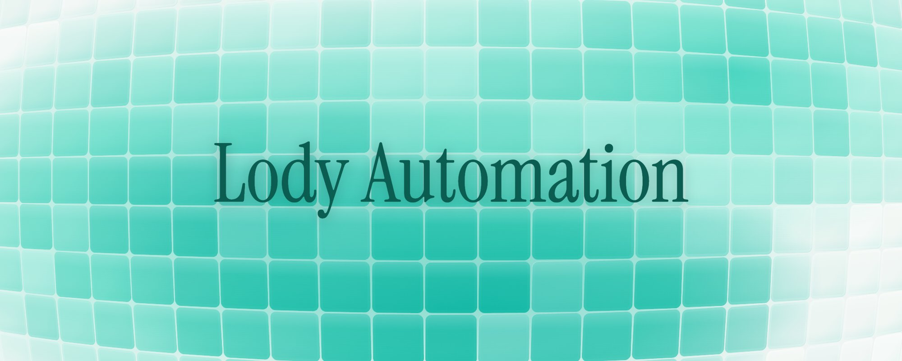
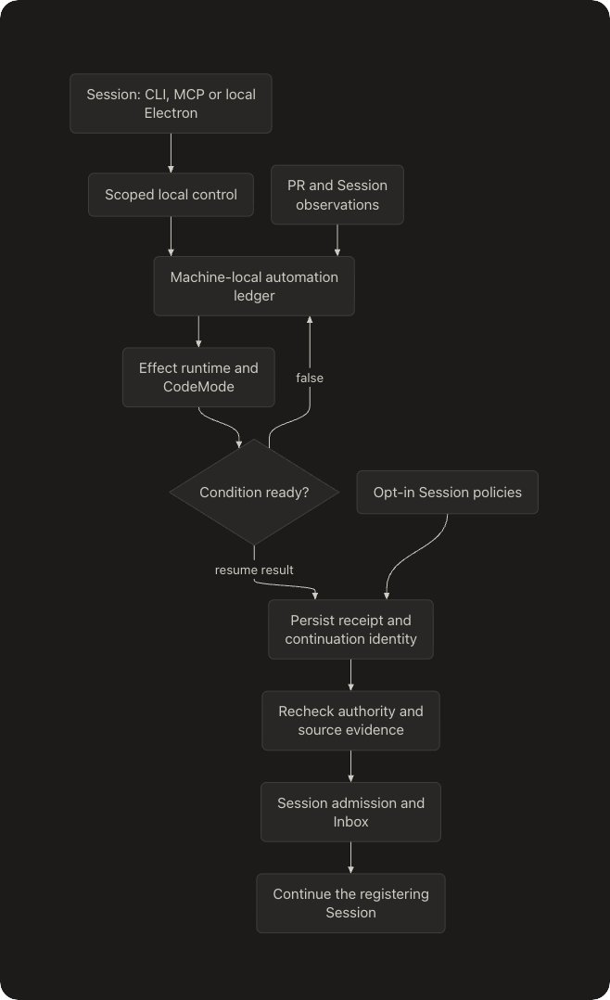

Agent 要能睡下再被事件叫醒，缺的是一层持久化基底：Lody Automation 的设计
发长文的那条推文里，作者的判断是：Agent 框架之间的较量，最后会离开 Prompt 与工作流编排，回到状态机和持久化系统设计上。长文记录 Lody Automation 怎么设计，以及下一步还能做什么。
原帖 X 长文 LodyAI/Lody 仓库 PR #1952（功能实际所在） 雷达里的 Lody 条目精读版（加密，全文对照）导读约 12 分钟
补充 · 文中提到的引用推（2026-11-07 北京 10:52）：他给 Lody 加了一个底层自动化模块，能放开编排，也能借此观察 Agent 怎么用它；这个机制早年在 Cradle 里做过，有的 Harness 叫它 codemode schedule。
真要做事件驱动的 Agent，会撞上一堵墙：缺一层干净、通用的持久化基底

怎么看：封面只有 Lody Automation 这个名字，交代本文讲的模块。
近来大家讨论 LLM Agent 架构，话题集中在 Harness 层的 Loop、上下文窗口管理、Tool Call 与 Write-Ahead Journal。作者说，等你在真实生产环境里搭事件驱动（Event-Driven）的自主工作流，就会碰到一堵隐藏的硬墙：底下没有一层干净、通用的持久化基底（Durable Substrate）。下文结合 Sorbet、Lody 里实际演进遇到的问题，回答底层缺什么、架构怎么设计。
对应的实现在 Lody 最新的 PR（文中写 #1925）：它借 lody automation 和 MCP 工具 lody_automation，加入了 Durable, Session-bound JavaScript Waits——挂在某个 Session 上、重启也不丢的 JavaScript 等待。
补充 · PR 编号核对
公开仓库的 #1925 是项目创建向导，与自动化无关；这个功能在 PR #1952（2026-10-31 合并），用词和流程图都对得上。是否笔误，未确认。
想了解详情，他建议在 Lody 里直接问自己的 Agent「Lody automation 是什么呀？」；他还说，用上它会得到一种以前没有的编排工作流的方式。
他在之前的推文（2026-11-07）里略提过这些，这篇是展开的记录。
四个场景都要求 Agent 先睡下，等事实到了再在原 Session 里醒来
作者让读者设想四种情况，比如说第一种：CI 失败后要闭环修复。Agent 推完代码，Session 空闲着等 CI；结果是 Failure 时，系统得带着日志把原 Session 叫醒去修，唤醒的形式是 Context-Event。另外，同一个 Webhook 就算重复送达 10 次，也只该换来 1 次精准的 Admission（准入）。
第二种：Provider 额度用光。任务做到一半，API 返回 5 小时窗口的 Rate Limit，现有系统通常把它当成 model_error 或网络超时了事。作者要求的是：当前 Session、做完的 Effects 状态、请求边界都安全挂起，额度一恢复就自动 Continue，已经成功的副反应严禁盲目再来一遍。
第三种：事实触发、条件稳定。PR 合并后用户要归档 Session，可归档必须等整个 Session 组真的稳定，不能仅仅凭它看起来暂时没事做。
第四种：Agent 动态装规则。用户口头交代「以后该 Repo CI 失败就唤醒对应 Session」，这条指令该由宿主授权的 Action 落成一条跨 Session 长期存在的 Durable Rule；要是做成临时闭包，Tool Call 一结束它就没了。
他的判断：许多 Agent Runtime 的执行层往往已经做得很完善，持久化接缝却还是一片空白。
通用基底不碰业务概念，核心只需要 6 种系统能力
他不想把 GitHub、PR、Workspace 这种业务概念硬写进 Core，也不想上昂贵的 BPMN/DAG 工作流引擎。归纳起来，底层要的只有 6 个通用能力，依次如下。
- 插件自治的持久化记录。给每个插件一块追加写（Append-only）、有序、带 Cursor 的持久分区；提交结果用的语义跟 Composition Authority 相同，分 committed、not-committed、unknown、conflict 四种；若插件被卸载或停用，历史数据也不许被悄悄删掉；插件之间的数据必须严格隔开。
- 持久化触发器。宿主可以替插件排定以后要做的事、把外部事件送进来，投递语义是 At-least-once，并附稳定的幂等键（Idempotency Key）。另外，触发器的元数据，以及下次执行时间、时钟策略、Callback 绑定，必须全部持久化；真触发时必须产出一个归 Scheduler Journal 托管的 Operation，内存里的计时器一丢就没，不能依赖。
- 激活时重水合。宿主重启以后，插件别靠在 apply 里重新登记一遍规则冒充自己还在运转。要有明确的 Rehydration 生命周期，由插件读回自己的 Records，把未完成的工作再向宿主申报，宿主据此重新 Admit 或 Re-evaluate。
- 宿主托管的 Session Input 入口。插件要叫醒某个 Session，不能冒充 User Message，必须用带完整 Provenance（来源溯源）的 Context-Event 注入；必须明确写出 Busy Policy，例如对方忙就入队、不丢弃，而且入队意图在正式 Admit 前就已经落盘；必须回一张身份稳定的 Receipt，重试也不会冒出第二个 Turn。
- 单插件的 Admission 预算与防护。规则叫醒 Turn，Turn 再触发规则，很容易绕成死循环，因此宿主必须以插件为单位设防：Admitted-Turns 预算有上限，衍生深度（Derivation Depth）有上限；接连失败就隔离（Quarantine）；用户按下 Stop / Cancel，任何自动恢复都得让路。
- Runtime 层的 Capacity 分类与挂起意图。额度用尽属于 Journal 的原生语义，不该让插件当业务逻辑处理。Runtime 得有结构化的 Provider 错误解码器，把这类错误标成 blocked_on_capacity，别混进通用 Error；未完成的状态用持久化的 Work Intent 记着；预估的重置时间到了，只做一次 Re-check，并不据此断定容量回来了。
由 Session 登记 JS 条件，Host 在本机反复判断，成立时只往原 Session 队列放一条续跑
作者说这里只粗讲 Lody Automation 的解决思路，细节看 Lody 的代码。
一句话版本：由 Session 登记一段 JavaScript 条件，Host 在本机一遍遍求值；条件成立，就只给原 Session 的队列塞一条续跑输入，剩下的交给现成的 Session / Inbox 机制。

怎么看：从上往下。Session 经 CLI、MCP 或本地 Electron 发起，经过有范围的本地控制，写进本机的 automation ledger；PR 和 Session 的观察数据也进 ledger。Effect 运行时和 CodeMode 对条件求值：false 回到 ledger 接着等；得到续跑结果，就先持久化回执和续跑身份，再复核授权与源证据，经 Session 准入和 Inbox，继续注册它的那个 Session。右侧可选的 Session 策略也接到持久化回执这一步。
前面期望的 6 种能力，在 Lody 里大体分成下面几层落地（第 6–10 节）。
补充：此图与 PR #1952 描述里的流程图一致。
「等什么」用一段 JS 写：它只回答该不该醒，只读 Host 授权的数据，每次检查有硬预算
等待条件写成一个函数，语言是 CodeMode 支持的那部分 JavaScript。原文例子：
async ({ ctx }) => {
const { value } = await ctx.read('github.workflowRuns');
if (value.status !== 'observed') return false;
const failed = value.pullRequests.flatMap((pr) =>
pr.runs.filter((run) => run.status === 'completed' && run.conclusion === 'failure')
);
if (!failed.length) return false;
return { resumeText: 'CI 失败了，查看结果并继续修复。', payload: failed };
};这段代码读 github.workflowRuns：状态还不是 observed，返回 false 接着等；然后在各 PR 的 run 里找已完成、结论为 failure 的；找不到也接着等；找到了就返回续跑文本，失败的 run 放进 payload。
返回值只分两种：false 是继续等；{ resumeText, payload? } 是等待结束——在登记它的 Session 里排进一条续跑，resumeText 是输入文本，payload 作为参考数据带上。
登记可以用 CLI（lody automation register，加 --file condition.js），也可以用 MCP 工具 lody_automation，所以 Agent 能自己给自己「设闹钟」。
一登记就开始检查，条件早已成立的话不必等下次状态变化。检查间隔默认 30 秒（最小 1 秒），可以设一个绝对过期时间，过了期就不再产生续跑；同一 Session 中重复的活跃登记会被自动合并去重。
条件程序手里只有一个 ctx，含 sessionId、now 和 read(resource)；能读到的是 Host 授权给它的观察数据，读不到任意系统状态。资源清单见原表 1：
| 资源 | 读到什么 |
|---|---|
| session | 当前 Session 的输入标识、是否已 Stop / 归档 |
| session.group | Session 组是否已稳定（yes / no / unknown） |
| github.pullRequests | 关联 PR 的生命周期与带时间戳的轮询观察 |
| github.workflowRuns | 当前 PR HEAD 上可信的 CI Run / Attempt，或 unknown |
| provider.capacity | 当前绑定的额度窗口与可用性（不主动查询 Provider） |
| events | 该 Session 已持久化的事实，可按时间和条数过滤 |
还有两个收紧了的出口。ctx.fetch 只能发 HTTP(S) 的 GET / HEAD，响应体最大 64 KiB，URL 里带凭据或遇到重定向一律拒绝。ctx.exec 在 Session 的工作目录里直接调用本地可执行文件，不过 shell，环境变量只给 Host 明确提供的那些。
每次检查的硬预算：超时 30 秒；读取、请求、命令调用加起来最多 32 次；4 路并发；每次操作上限 128 KiB。检查连着出错 5 次，这个等待就以 failed 收场；其间成功一次，出错计数归零。Session 或等待被取消，解释器连同进行中的操作一并中断，并等它们收尾。
JS 也不能选择动作、授权或目标：条件程序只回答「该不该醒」，醒来后干什么由 Lody 原生代码决定。
一切状态落在本机账本：匹配即定局，先落映射再动手，副作用不当步骤
等待、结果、动作回执、源证据快照，还有定下来的续跑身份，都存在这台机器的 SQLite Ledger 里，不往外传。韧性靠下面几条规则。
- 匹配即定局（Match is final）：条件一旦为真，Host 把匹配结果、自己抓的证据、续跑身份放在一次原子提交里写下，之后这段程序不再跑。原因：如果每次恢复都重新求值，事件可能已经掉出读取窗口，本已匹配的等待会一直卡在 blocked。重启后就按这张回执接着送达。
- 先落映射、后产生副作用：动作、Session、Turn 三者的稳定对应关系，先写盘再执行。提交后的确认丢了，就拿同一个 Turn 去对账，prompt 不会再发第二遍；只有能确认根本没提交过的输入，才拿原来那组 id 再生成一次。
- 未决状态持久保留：动作截止时间记在回执上，重启不失效，到点只记一条去重过的 timer.due 事实。Turn 的结果先暂存，之后才释放 Inbox；恢复时只看这些暂存身份，不会翻历史记录去猜哪些活可能还没干完。没确认的释放、失败的观察，会一直留到某次检查成功为止。
- 检查可重试，副作用不能当步骤：检查被打断会再跑，而工具产生的副作用不能被当成持久化步骤，因此 ctx.exec 只适合那种重复执行也安全的检查。
调度循环、解释器由原生 Effect 托管；准入、排队、取消、最终执行依旧归 Session 与 Inbox 管。Automation 没有另开一条执行通道。
条件匹配和真正投递之间，还隔着一道复核
等的这段时间里情况会变：PR 可能被重新 push，CI 重新跑了，授权被撤销，用户 Stop 了 Session。所以「条件匹配」和「真正投递」中间还有一道检查：
- 证据由 Host 抓，不由 JS 自报。CI 的 Run、Attempt、源码 Revision 都由 Host 记录，冻结进回执，来源无法伪造。证据来自 fork、缺失、过期或被截断，一律标 unknown，不按「没问题」处理。
- 投递之前再查一遍。准入时重新核对当前授权（与冻结那时的授权取交集）、Session 状态、源证据；HEAD 一变或 CI 一重跑，旧证据就作废。CI 类续跑发 prompt 前的那一刻，还会核对它引用的 checkout。
- 接受了的续跑会让数据源一直「有需求」。只要还有活跃的 CI 等待或尚未投递的续跑，PR 轮询器就继续轮询这个 PR，哪怕 PR 已经结束；同时仍守原有的配额和公平性限制。
用户的 Stop 永远压过自动续跑；Session 忙时续跑排队，不丢
Session 被 Stop 后，检查照做，续跑却进不了准入。已经匹配的续跑转为 blocked，原因 target_stopped；这不计为检查错误，也不会偷偷改投一个新 Session。只有用户通过协作控制明确「恢复」才解开；解除后系统重新检查授权、Session 和证据，再把原来那条续跑提交上去。
取消（Cancel）的顺序：先撤销未来的准入，再中断正在进行的检查，然后经所属机制把已经生成的那条输入也取消；做完的工作不回滚。Session 正忙时，续跑会入队等候，不会被丢掉。
事件到动作的映射写死在原生代码里，内置策略只是开关，全部默认关闭
哪个事件触发哪个动作，写在 Lody 的原生代码里，用户不能像画规则图那样自己编排。用户只能用 lody automation configure 把下面这些开关打开：
{
"recoverCapacity": true,
"archiveAfterMerge": true,
"compactWhenIdle": { "contextTokens": 300000, "cacheTtlMs": 600000, "leadTimeMs": 60000 }
}补充：三个键依次对应下面三项。文中没交代数值单位；仓库文档说时间按毫秒计。
- 额度恢复（Capacity Recovery）：结构化的额度耗尽、Codex 过载，都由这一个开关管。出错那一刻，原生会话、启动绑定、输入和工具边界会在释放执行之前存好；上报过的每个额度窗口都要参与判断。重置时间到了只是再查一次，不等于放行；缺失或过期的数据永远不算「有额度」，未知就等下一次观察。遇到过载最多重试 3 次，间隔逐次拉长（5 / 10 / 20 秒）。若还有没确认的释放、工具副作用，恢复就被挡住；来了新输入，旧的恢复任务就被替换。
- 合并后归档（Archive after Merge）：状态变化和持久的「已合并」证据由 PR 轮询器记录。整组 Session 都稳定了才动手——包括子 Session、队列、Goal，以及原生和 Automation 两边没做完的工作；然后在准入屏障下再核一遍，最后才提交根 Session。
- 闲置压缩（Idle Compact）：条件是上下文占用达到阈值、那个闲置的 Turn 仍是当前 Turn、原生适配器声明了支持 /compact；只要来了新输入或到了期限，这次压缩就作废。cacheTtlMs 只是运营者自己的估计，并不证明 Provider 缓存真是这么久。
几条原则不退让：Journal 是唯一真相，数据不扩权，不伪造用户输入，未知不等于失败，不搞第二个 LLM Loop
引入这层持久化时，作者坚持几条不能让步的架构原则：
- Journal 永远是执行层唯一的真相。插件记录只拿来记意图、记账，绝不能变成第二个真相来源（Truth Source）。
- 数据不能扩大权限。Webhook Payload（CI 日志、PR 标题）只是 Data，运行中不许借它把 Agent 的权限边界（Authority）撑大。
- 严禁伪造用户输入。由事件驱动的 Turn，在 Projection 里必须一眼能看出是事件触发的。
- Unknown ≠ Failed。结果已 Commit 却等不到 Confirmation，Receipt 就标 unknown，重启后去 Reconcile，不会盲目地再放一遍。
- 不搞第二个 LLM Loop。Harness 仍归 Host，底层执行机制仍归 Runtime；Durable Trigger 的职责只是把工作重新挂回常规的 Admission 路径。
额度恢复、CI 闭环、合并归档是同一模式的三次实例；目标其实是状态感知
额度恢复、CI 闭环、合并后归档，表面是三个功能。作者认为它们是一个模式的三次套用：先从现有的所有者处观察事实，再由一段条件决定是否唤醒，最后经常规准入把 Agent 叫回来。照此推下去，可接入的事实远多于这三类；他说这正是 Lody Automation 往后能玩出更多自由编排的原因。
补充：下面三条是他盘点的现有能力。
- 条件用 JS 写，数据源是能扩展的资源。ctx.read 目前共 6 种资源：session、session.group、github.*、provider.capacity、events。想接一个新数据源，在对应所有者旁边补一个适配器（说明它的范围、新鲜度与准入证据）就行，调度和账本不用动。
- ctx.fetch、ctx.exec 已经算通用出口：比如查部署状态页、用本地命令看长任务完了没有，今天就能写成等待条件，只是它们还不是一等资源。
- events 是这个 Session 落盘过的事实流，顺带也是 Agent 自身行为的记录。
他说最基础的原语已经具备，剩下的是方向问题，可能有这几条：
- 更多外部状态源？部署完成没有、监控告警、Code Review 评论、Issue 状态变化、长时间跑的本地任务……只要是 Agent 眼下不必盯、出了结果又得回来处理的事，都能做成一种资源。Agent 不用轮询，也不用占着一个 Turn 干等，等待这件事交给 Lody。
- 多 Session 的状态感知。session.group 已经能判断一整组 Session（子 Session、队列、Goal、原生工作都算在内）是否真正稳定。他用问句提出下一步：让牵头的 Session 等它分出去的子任务都收尾后醒来做汇总？又或者，让共用同一个 PR、同一份 CI 结果的几个 Session 彼此知情，免得重复劳动？
- 感知 Agent 自己。events 里存的是 Agent 的行为轨迹：在哪卡住、同一件事失败几次、上下文压力多大、空闲多久。这些信号可以驱动闲置压缩一类的策略，也给人研究 Agent 行为提供材料；他说这也是自己当初写这个模块的一个动机。
- 从「出事了再救」到「出事前先知道」。眼下额度恢复要等失败发生才介入。若持续观察 provider.capacity，下一步就能在窗口快耗尽时提前察觉，交给用户或策略定夺，比如缩小任务、改为排队，不必真撞上了再处理。
- 把这层能力还给插件。第二节那 6 种能力，Lody 今天只实现了与 Session 续跑直接相关的部分，用户是内置策略。长远看，他希望持久化记录、持久化触发器、激活时重水合变成插件平台人人可用的基底，第三方在不改 Core 的前提下，也能做出「会睡觉、会被唤醒」的功能。
Agent 变成后台协作者之后，地基是持久状态与事件驱动的基底
作者的收尾：Agent 正从用完即走的命令行对话工具，变成常驻后台的自动化协作者；框架竞争终会从上层的 Prompt Eng/Workflow 编排，转回底层的状态机和持久化系统。Agent 能在后台替你等 CI、熬过 API 额度用光、条件成熟时准确醒来，靠的地基就是 Durable State 与 Event-Driven Substrate。
他说 Lody 用 SQLite Ledger + CodeMode 沙箱 + Effect 运行时这套轻组合，为 Agent 运行时在状态上的韧性找了一条可行路线，欢迎去 LodyAI/Lody 仓库看实现。
补充：文中的功能名、MCP 工具名和资源表与公开仓库一致，PR 编号对不上
补充 · 对照 LodyAI/Lody 仓库（2026-11-12 抓取）
一致：MCP 工具名 lody_automation，CLI 的 register / configure；原表 1 的 6 种资源；间隔、预算与上限数字；三个开关名、默认关闭、过载重试与 target_stopped。
对不上：PR 编号（见第 2 节补充）。Sorbet 指什么项目，文中没说，未确认。
三道题，检查你能不能把这些规则用到新情况
补充：答错只标你选的那一项，不揭晓答案；回看对应小节再试。